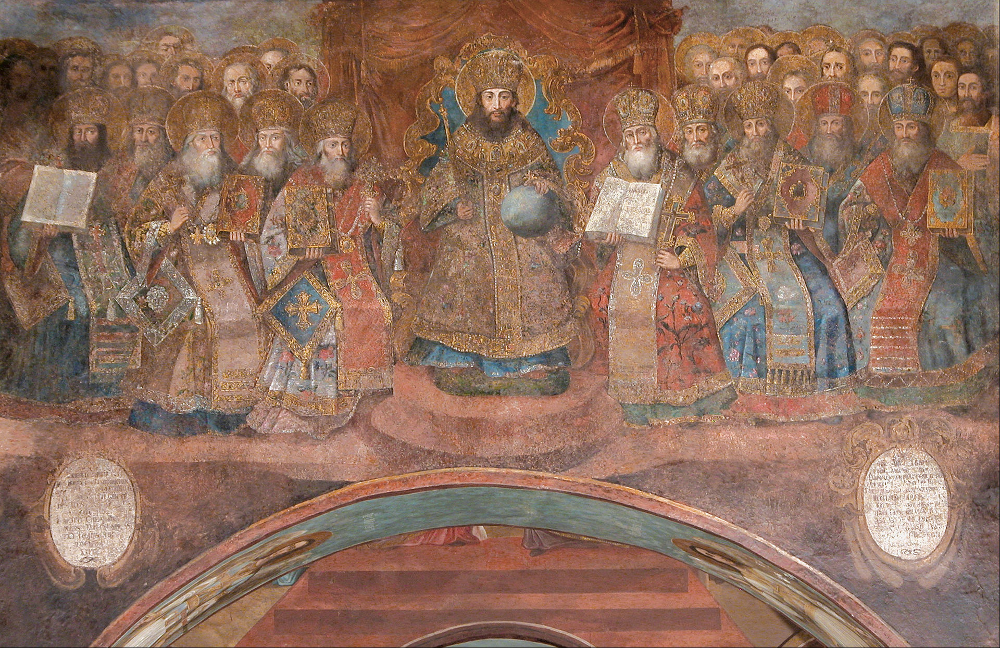
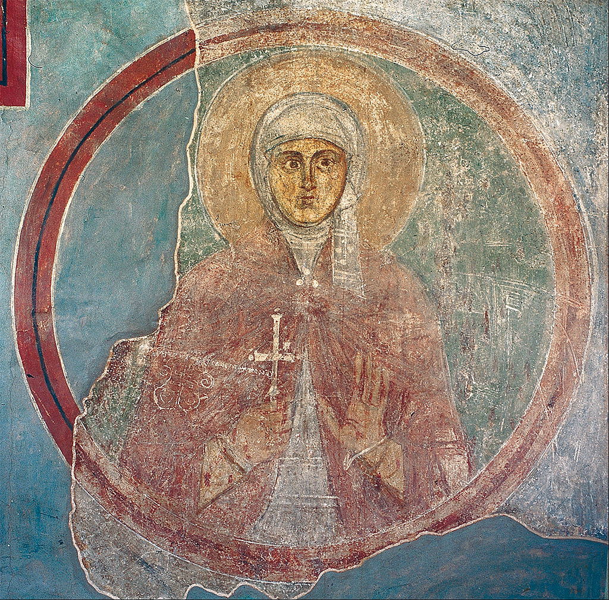
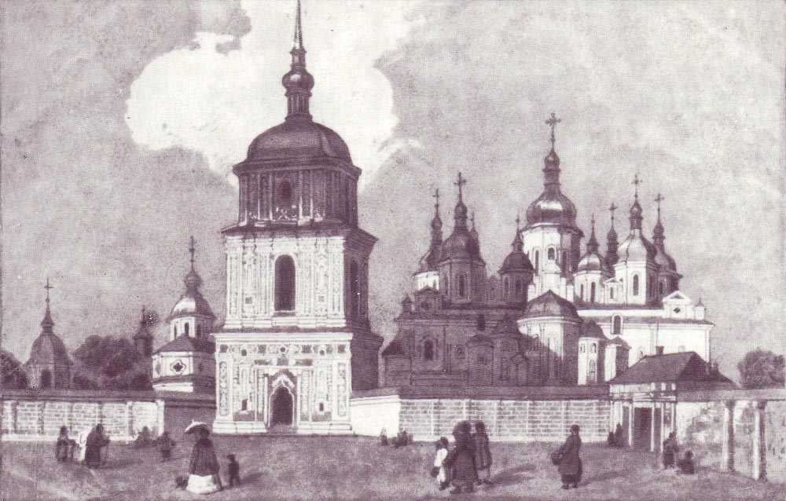
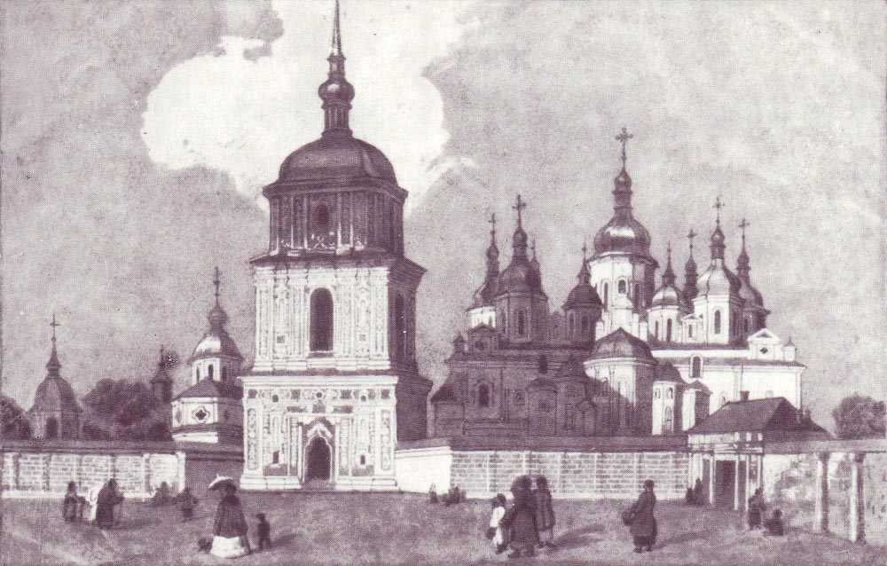

Софійський собор

Історія
У «Повісті минулих літ» заснування Софійського собору значиться під 1037 роком; в Новгородському літописі подія датується 1017 та 1037 роками. Місцем закладення було поле битви на якому роком раніше (1036) військо Русі здолало печенігів. Засновником собору, як вказують літописні джерела, був київський князь Ярослав Мудрий. Інші джерела пов'язують заснування собору з іменем Володимира Великого. Сучасник будівництва собору митрополит Іларіон Київський у своєму «Слові про Закон і Благодать», згадуючи Софійський собор, говорить, що в його створенні Ярослав завершив справу свого батька Володимира; німецький єпископ Тітмар Мерзебурзький (†1018) згадує під 1018 роком дійовий Софійський монастир у Києві. Останніми роками набула популярності гіпотеза про заснування Софії Київської князем Володимиром. Доктор історичних наук Надія Нікітенко, підтримана доктором історичних наук В'ячеславом Корнієнком, висунула гіпотезу: собор закладено 4 листопада 1011, освячено 11 травня 1018, спорудження розпочав Володимир Великий, завершив Ярослав Мудрий. Ця концепція побудована на підставі нової інтерпретації світських фресок та знайдених на фресках собору графіті, датованих 1018/21, 1019, 1022, 1023, 1028, 1033 і 1036 роками; на підставі свідчень Іларіона та Тітмара. Ця гіпотеза дискутується;, її знайшли достатньо переконливою для святкування у 2011 р. 1000-річчя заснування Софійського собору; ювілей відзначили на міжнародному і загальнодержавному рівнях за рішенням ЮНЕСКО і за Указом Президента України. Собор присвячено Софії — Премудрості Божій — одній з найскладніших абстрактних категорій християнського богослів'я, що має багато тлумачень. За апостолом Павлом, Софії символічно відповідає іпостась Христа — втіленого Слова Божого. Пізніше, коли поширилося ототожнення Софії з Божою Матір'ю, престольне свято київського собору перенесли на 8 (21) вересня — день Різдва Богородиці. Художній образ Софійського собору мав втілити багатогранний зміст, вкладений у цей символ. Це пояснює його грандіозні розміри та надзвичайно ускладнена структура; інтер'єр Софії відтворює середньовічну модель Всесвіту, зовнішній вигляд — образ Граду Божого — Небесного Єрусалима. За багатовікову історію собор пережив навали ворогів, пограбування, часткові руйнування, ремонти, перебудови. Київський Софійський собор був однією з найбільших будівель свого часу. Загальна ширина собору — 54,6 м, довжина — 41,7 м, висота до зеніту центральної бані — 28,6 м. Собор має 5 нав, завершених на сході апсидами. Увінчаний 13 верхами з банями, покритими свинцевими листами, що утворюють ступеневий пірамідальний силует, оточений з трьох боків двома рядами відкритих галерей, з яких внутрішній має два яруси. Довгий час вважали, що галереї прибудовані до собору пізніше; дослідження останнього часу довели, що вони пов'язані єдиним задумом, виникли водночас. Хрестильня, вбудована у західну галерею, належить до середини XII ст. Стіни викладені з великих природних каменів — граніту й рожевого кварциту, ряди яких розділені рядами пласкої цегли — плінфи. Мурування виконували на рожевому вапняно-цем'янковому розчині. Первісно собор не був зовні потинькований і побілений.
Інтер'єр собору
Мозаїки
Біля кожної мозаїчної композиції є написи грецькою мовою, що пояснюють сюжет. Імена мозаїстів невідомі. Однак художні особливості окремих зображень і способи укладання смальти дають можливість визначити склад бригади майстрів у кількості восьми осіб (не рахуючи підмайстрів).  Особливу цінність становлять мозаїки XI ст., які прикрашають головні частини собору — центральну баню і головний вівтар; зображені основні персонажі християнського віровчення. Вони розташовані в строгому порядку згідно з «небесною ієрархією». Витвором мистецтва мозаїки вважається зображення Оранти розміщеної в центральній апсиді — фігури Святої Діви Марії, руки якої підняті в молитві. Мозаїка має 6 метрів у вишину. Унікальність: виконане на внутрішній поверхні куполу Собору, з різних точок Оранта виглядає зображеною у різних позах — стоячи, схилившись у молитві чи на колінах. Усі мозаїки собору виконані на сяйному золотому фоні, їм притаманні багатство барв, яскравість і насиченість тонів. При всій кольоровій різноманітності мозаїк переважними тонами є синій і сіро-білий у поєднанні з пурпуровим. Кожний колір має багато відтінків: синій-21, зелений-34, червоно-рожевий-19, золотий-25 та ін. Це свідчить про високий розвиток у стародавній Русі скловарної справи та техніки виготовлення смальти. Всього палітра мозаїк собору налічує 177 відтінків кольорів. Наразі сучасні майстри, використовуючи методи 11 сторіччя, не в змозі виготовити таку різноманітність кольорів мозаїки. Смальта виготовлена зі скла, забарвленого в різні кольори додаванням солей і окисів металів. Зображення виконані безпосередньо на стіні шляхом вдавлювання у вогкий тиньк кубиків смальти, розміри яких у середньому близько 1 см³. У наборі облич часто зустрічаються дрібніші кубики — близько 0,25 см³. Ґрунт під мозаїками тришаровий, загальна товщина його 4–6 см. Крім смальти, використано кубики з природного каміння. У зеніті центральної бані зображений Христос Пантократор (Вседержитель), який царює над усім простором. Навколо Христа-Вседержителя — чотири архангели, з яких лише один — мозаїчний, а інших наприкінці XIX ст. домалював олією М. О. Врубель. У простінках між вікнами барабана зображені дванадцять апостолів, з них мозаїчною збереглася лише верхня частина постаті Павла. З чотирьох зображень євангелістів на парусах, що підтримують баню, цілком залишилась постать Марка на південно-західному парусі. На північній і південній попружних арках розташовано п'ятнадцять мозаїчних медальйонів із зображенням мучеників. На стовпах передвівтарної арки — мозаїчна сцена «Благовіщення».
Фрески
Фрески (розписи мінеральною фарбою на вологому тиньку), що збереглися в Софійському соборі, датуються ХІ століттям — вони були виконані під час будівництва собору. В XIX столітті, під час реконструкції собору, фрески були поновлені олійними фарбами, які, як правило, повторювали контури старих зображень.  В ХХ столітті, під час чергової реставрації вченими було виявлено, що велика частина фресок ХІ століття збереглася під шаром тиньку та олійних фарб, і, де це було можливо, старі фрески були відкриті. Колірна гама древніх фресок створювалася на поєднанні темно-червоних, жовтих, оливкових, білих тонів та блакитного тла. Для розпису Софії характерна чіткість композиції, виразність образів, барвистість, органічний зв'язок з архітектурою. Весь ансамбль стінопису Софії Київської за своїм змістом був підпорядкований єдиному задуму — вкоріненню недавно прийнятого християнського віровчення й утвердженню феодальної влади. Разом з тим розпис головного собору держави повинен був показати велич Русі, її міжнародне визнання, роль київського князівського дому в політичному житті Європи. Тому в Софії значне місце відведено світським композиціям. На трьох стінах центрального нефа, навпроти головного вівтаря, було написано княжий сімейний портрет засновника собору. Портрет традиційно пов'язують з родиною Ярослава Мудрого. За версією Надії Нікітенко, тут зображено родину Володимира Святославича. На портреті князь Володимир та княгиня Анна очолювали урочисту ходу своєї родини, причому князь тримав у руках модель собору. На жаль, до нашого часу від цієї фрескової композиції уціліли лише постаті дітей князя на південній і частково на північній стінах. Про решту зображень розповідає малюнок голландського художника Абрагама ван Вестерфельда, який бачив фреску в середині XVII століття. У сходових вежах, що ведуть на княжі хори, зберігся унікальний палацовий цикл світських фресок. Тут представлені сцени візантійського придворного життя, змагання на константинопольському іподромі, музики, акробати, мисливські сюжети. Доктор історичних наук Сергій Висоцький визначає ці фрески як зображення прийому в середині Х ст. княгині Ольги візантійським імператором Костянтином Багрянородним. Натомість професор Надія Нікітенко доводить, що фрески веж складають великокняжий тріумфальний цикл, який ілюструє укладення на зламі 987/8 рр. династичного шлюбу князя Володимира і візантійської принцеси Анни, що поклав початок хрещенню Русі. На стінах обох веж добре видно орнаменти, символічні малюнки та численні мисливські сцени: «Полювання на ведмедя», «Боротьба ряджених», «Полювання на вепра» тощо. Фрески веж — унікальна пам'ятка середньовічного монументального мистецтва і важливе історичне джерело, що свідчить про культурні зв'язки Київської Русі та Візантії. Звертає на себе увагу розпис, що зберігся в колишній хрестильні собору, зокрема фрескова композиція XI століття «Сорок севастійських мучеників». Хрестильнею приміщення стало на межі XI—XII сторіч, коли в арку галереї було вбудовано апсиду. Фрески апсиди — «Хрещення» і постаті святителів — відбивають стилістичні особливості монументального мистецтва того часу. Фрески збереглися в усіх древніх приміщеннях собору, в першу чергу на стінах центрального підбанного простору (євангельські сцени). У Софії Київській груповий княжий портрет розміщений на трьох стінах центрального нефа (коридору), навпроти головного вівтаря під княжими хорами. Це найбільша фреска собору, вона має у довжину 15 метрів. На думку істориків, це говорить про значення і могутність Київської княжої влади для всього тогочасного світу. І, отже, — Володимир — той князь, який замовив та збудував собор. На портреті зображено церемонію освячення Софії родиною хрестителя Руси-України Володимира. У бокових вівтарях — жертовнику і дияконнику — збереглися цикли фрескових композицій, що розповідають про діву Марію (вівтар Іоакима та Анни) і про діяння апостола Петра (вівтар Петра і Павла). Розпис південного вівтаря (Михайлівського) присвячений архангелу Михаїлу, який вважався на Русі покровителем Києва і князівської дружини. Фрески крайнього, північного вівтаря оповідають про святого Георгія — духовного патрона князя Ярослава Мудрого. Великий інтерес викликає цикл фрескового розпису, що зберігся на хорах. Це сюжети «Зустріч Авраамом трьох подорожніх», «Гостинність Авраама», «Жертвоприношення Ісака», «Три отроки в пещі огненній», «Тайна вечеря», «Чудо в Кані Галілейській» тощо. Значне місце в розписах собору займають орнаменти: вони обрамовують віконні та дверні прорізи, підкреслюють лінії арок і склепінь, збігають пілонами й стовпами, панеллю проходять понад підлогою.
Архітектурний ансамбль
Дзвіниця
З боку Софійської площі височіє Дзвіниця з парадним в'їздом на подвір'я собору. Її силует зводить у єдине
ціле споруди Софійського ансамблю. Дзвіниця вбудована у монастирський мур з південно-східного боку
подвір'я. Це перша кам'яна споруда, зведена в 1699–1706 роках після пожежі кінця XVII ст. Її архітектор
невідомий, у документах згадується лише ім'я одного з будівничих — «кам'яних справ підмайстра», мешканця
Києво-Печерського містечка Сави Яковлєва. Спочатку Дзвіниця була триярусною, увінчаною невеликою банею з
високим шпилем. Оскільки Дзвіницю зведено на місці давнього яру, невдовзі після спорудження її верхні
яруси почали руйнуватися. Вони дали значні тріщини, що загрожувало обвалом, тому в 1744–1748 роках були
розібрані й перебудовані. Відбудовою Дзвіниці керував відомий петербурзький зодчий Й.-Г. Шедель, який на
замовлення митрополита Рафаїла (Заборовського) виконав у Києві чимало будівельних робіт. Відбудована
Дзвіниця також була триярусною, увінчаною ошатною бароковою банею з позолоченими шпилем і зірочками на
блакитному тлі. В 1851–1852 роках за проєктом єпархіального архітектора П. Спарро Дзвіницю підвищено ще
на один ярус. Її увінчали дерев'яною грушоподібною банею, вкритою мідними позолоченими листами.
 Дзвіниця, висота якої досягла 76 м, стала домінувати не лише над колишньою Хрещатою долиною, а й над
забудовою Верхнього Києва. Хоча від первісної споруди збереглися перший і частина другого ярусу, однак
архітектура і декор Дзвіниці сприймаються як гармонійне ціле. Парадність Дзвіниці підкреслено
пірамідальною композицією: чотири архітектурні об'єми поступово звужуються догори і завершуються банею.
Два нижніх яруси — прямокутні, верхні — восьмикутні. Над ними височіє баня, увінчана маківкою з хрестом.
Нижній ярус має склепінчастий проїзд, арки якого прикрашені розірваними фронтонами. Над проїздом
влаштоване закрите приміщення, куди ведуть гвинтові сходи у товщі стіни з північного боку проїзду. Три
верхні яруси не мають міжповерхових перекриттів і відкриті назовні арками. Ярусність композиції
позначено карнизами складного профілю, по вертикалі поверхні стін розчленовано пласкими пілястрами, між
ними — декоровані ніші. З архітектурними формами Дзвіниці чудово взаємодіє її скульптурний декор. У
вигадливе мереживо ліпного орнаменту вплетені сюжетні барельєфи — динамічні фігури ангелів у вигляді
українських парубків у підперезаних жупанах, зображення купідонів, масок, гірлянд, квітів у кошиках,
букетів, геральдичних двоголових орлів, балдахінів над нішами тощо. Східний фасад звернений до
Софійської площі. Він прикрашений у третьому ярусі постатями апостола Андрія і князя Володимира —
основоположників християнства на Русі-Україні.

Західний фасад Дзвіниці, з боку подвір'я, декорований постатями архангела Рафаїла й апостола Тимофія —
небесних патронів митрополитів Рафаїла (Заборовського) і Тимофія (Щербацького), за яких у XVIII ст. вона
перебудовувалась. Ліпні прикраси виконували талановиті майстри з Жовкви Іван і Степан Стобенські.
Орнаментація стін посилюється пофарбуванням Дзвіниці, яке спершу було поліхромним, а з ХІХ ст. фасади
стають двоколірними. Яскрава білизна ліпних прикрас на бірюзовому тлі у поєднанні з сяйвом золота
створюють враження урочистої святковості. У другому ярусі Дзвіниці зберігся дзвін 1705 року, відомий під
назвою «Мазепа». Це один з 20 дзвонів, розміщених колись у Дзвіниці. Серед старих бронзових дзвонів, що
збереглися в Україні, «Мазепа» є найбільшим за розмірами та найбагатшим за орнаментикою. На початку ХХІ
ст. здійснені значні за обсягом ремонтно-реставраційні роботи: зміцнені конструкції, відреставровані
фасади та інтер'єр, оновлена позолота бані. Вперше за багато років пам'ятку відкрито для відвідування.
Влітку 2008 року, під час святкування 1020-річчя хрещення Русі на Дзвіниці встановлено 20 нових дзвонів
загальною вагою 835 кг. 25 липня 2008 року ці дзвони освятив Вселенський патріарх Варфоломій І. Відтоді
їхня гра супроводжує всенародні урочистості на Софійській площі.
Дзвіниця, висота якої досягла 76 м, стала домінувати не лише над колишньою Хрещатою долиною, а й над
забудовою Верхнього Києва. Хоча від первісної споруди збереглися перший і частина другого ярусу, однак
архітектура і декор Дзвіниці сприймаються як гармонійне ціле. Парадність Дзвіниці підкреслено
пірамідальною композицією: чотири архітектурні об'єми поступово звужуються догори і завершуються банею.
Два нижніх яруси — прямокутні, верхні — восьмикутні. Над ними височіє баня, увінчана маківкою з хрестом.
Нижній ярус має склепінчастий проїзд, арки якого прикрашені розірваними фронтонами. Над проїздом
влаштоване закрите приміщення, куди ведуть гвинтові сходи у товщі стіни з північного боку проїзду. Три
верхні яруси не мають міжповерхових перекриттів і відкриті назовні арками. Ярусність композиції
позначено карнизами складного профілю, по вертикалі поверхні стін розчленовано пласкими пілястрами, між
ними — декоровані ніші. З архітектурними формами Дзвіниці чудово взаємодіє її скульптурний декор. У
вигадливе мереживо ліпного орнаменту вплетені сюжетні барельєфи — динамічні фігури ангелів у вигляді
українських парубків у підперезаних жупанах, зображення купідонів, масок, гірлянд, квітів у кошиках,
букетів, геральдичних двоголових орлів, балдахінів над нішами тощо. Східний фасад звернений до
Софійської площі. Він прикрашений у третьому ярусі постатями апостола Андрія і князя Володимира —
основоположників християнства на Русі-Україні.

Західний фасад Дзвіниці, з боку подвір'я, декорований постатями архангела Рафаїла й апостола Тимофія —
небесних патронів митрополитів Рафаїла (Заборовського) і Тимофія (Щербацького), за яких у XVIII ст. вона
перебудовувалась. Ліпні прикраси виконували талановиті майстри з Жовкви Іван і Степан Стобенські.
Орнаментація стін посилюється пофарбуванням Дзвіниці, яке спершу було поліхромним, а з ХІХ ст. фасади
стають двоколірними. Яскрава білизна ліпних прикрас на бірюзовому тлі у поєднанні з сяйвом золота
створюють враження урочистої святковості. У другому ярусі Дзвіниці зберігся дзвін 1705 року, відомий під
назвою «Мазепа». Це один з 20 дзвонів, розміщених колись у Дзвіниці. Серед старих бронзових дзвонів, що
збереглися в Україні, «Мазепа» є найбільшим за розмірами та найбагатшим за орнаментикою. На початку ХХІ
ст. здійснені значні за обсягом ремонтно-реставраційні роботи: зміцнені конструкції, відреставровані
фасади та інтер'єр, оновлена позолота бані. Вперше за багато років пам'ятку відкрито для відвідування.
Влітку 2008 року, під час святкування 1020-річчя хрещення Русі на Дзвіниці встановлено 20 нових дзвонів
загальною вагою 835 кг. 25 липня 2008 року ці дзвони освятив Вселенський патріарх Варфоломій І. Відтоді
їхня гра супроводжує всенародні урочистості на Софійській площі.
Трапезна
З південного боку собору розташована Трапезна (Тепла, або Мала Софія), побудована в 1722–1730 рр. Вона об'єднувала церкву Воскресіння Лазаря, обідній зал і кухню. На другому поверсі містилися комори для продуктів і монастирського начиння. Під будинком влаштували велике складське приміщення. У 60-х роках XVIII ст. Трапезна добудовувалася за участю відомого українського архітектора І. Григоровича-Барського. У 1822 р. за проєктом архітектора А. Меленського Трапезну перебудовано на зимову церкву Різдва Христового. Відтоді вона має назву Теплої, або Малої Софії. У 1872 р. Теплу церкву значно розбудовано і надано їй вигляду тринавної базиліки з високою центральною навою, яка завершується на сході великим вівтарем, увінчаним грушеподібною банею. Ця гарна барокова споруда вкрита дахом «із заломом» і прикрашена з заходу пишним хвилеподібним фронтоном. Під час реставрації 1970-х років Трапезній частково повернули первісні архітектурні форми. У Трапезній експонується виставка «Перші Храми Києва». На ній можна ознайомитись з фрагментами мозаїчної підлоги з Десятинної церкви, гробницею прикрашеною різьбленням ХІ — ХІІ ст., історією дослідження архітектурних пам'яток давнього Києва тощо.
Хлібня
У 1722–1730 роках неподалік від Трапезної побудували Хлібню (пекарню), переобладнану після закриття монастиря під приміщення духовної Консисторії — органу єпархіального управління і суду. Спочатку будинок Хлібні був одноповерховим, а в 1770–1783 роках був надбудований другий поверх. 1853 року будинок знову перебудовувався. Було змінено його внутрішнє планування і архітектурний декор фасадів. Внаслідок перебудов споруда втратила первісний бароковий вигляд. Нині Хлібня — прямокутна у плані будівля, витягнута по осі північ-південь. На східному фасаді виступає оздоблений рустом ризаліт ХІХ ст. У ХІХ ст. вздовж вулиці Володимирської, на місці огорожі XVIII ст., спорудили друге (південне) крило Консисторії. ЇЇ первісне (північне) крило виявилося вбудованим у нову споруду своїм південним торцем. Наразі у приміщеннях Хлібні відкрито просторі виставкові зали.
Південна вежа
До південного крила Консисторії примикає кам'яна Південна вежа — ще один в'їзд на монастирське подвір'я, влаштований за часів гетьмана Івана Мазепи. Це квадратна у плані двоповерхова споруда, яку увінчує масивна напівсферична баня з конусоподібним шпилем. На шпилі, як і колись, в жовтні 2010 р. було встановлено металевий флюгер у вигляді позолоченої постаті архангела Михаїла. Перший поверх споруди має склепінчастий проїзд. Над ним розташоване просторе приміщення. Нині тут — одне з фондосховищ заповідника. У товщі східної стіни — склепінчасте приміщення для сторожі. Зі сходу до вежі примикає зведений одночасно з нею найдавніший відрізок потужного цегляного муру, що поєднує її з Дзвіницею. Мур навколо садиби Софійського монастиря споруджено впродовж першої половини XVIII ст.
Будинок митрополита
Будинок митрополита розташований у західній частині подвір'я Софійського архітектурного комплексу, напроти головного входу до собору. До створення цієї перлини українського бароко доклали зусиль кілька київських митрополитів. Споруджений у 1722–1730 рр. за часів митрополита Варлаама (Ванатовича), Будинок спочатку був одноповерховим. Його наступник митрополит Рафаїл (Заборовський) (1731–1747 рр.) спорудив другий поверх, у зведенні якого, ймовірно, брав участь талановитий зодчий Й. Г. Шедель. Завершення будівництва припало на час перебування на київській кафедрі митрополита Тимофія (Щербацького) (1747–1757 рр.), який залучив до робіт архітектора С. Антонова. В цей період споруджено третій, мансардний поверх, влаштовано новий дах з заломом, східний і західний фасади Будинку прикрашено чудовими бароковими фронтонами. У подальшому Будинок неодноразово перебудовувався, добудовувався і ремонтувався. У 1880-ті рр. за проєктом відомого київського архітектора В. Ніколаєва з західного боку зроблено прибудову, влаштовано балкон зі сходами, якими з другого поверху можна було спуститися в митрополичий сад. В інтер'єрі з'явилися нові широкі гранітні сходи. Після жовтневого перевороту Будинок митрополита було націоналізовано, і тут розташовувалися різні організації. Масштабні ремонтно-реставраційні роботи у Будинку митрополита здійснено протягом 2005−2008 рр. (автори проєкту реставрації — архітектори С. Юрченко і В. Отченашко; меценат — Благодійний фонд «Розвиток України»). В процесі робіт було відкрито та реставровано автентичний живопис XVIII ст., що зберігся в інтер'єрі пам'ятки. Фахівці вивчили найближчі аналоги предметів умеблювання, завдяки чому на першому поверсі Будинку сформовано музейну експозицію, яка відтворює інтер'єр та начиння митрополичих покоїв XVIII–XIX ст. На другому поверсі знаходяться виставкові зали та велика, обладнана сучасними технічними засобами, конференц-зала, де проходять конференції, семінари та інші заходи культурно-масового характеру.
Брама Заборовського
У XVIII ст. Будинок митрополита мав окремий в'їзд з міста — тріумфальну Браму Заборовського, до якої вела вулиця від Золотих воріт. Це одне з найкращих творінь Й. Г. Шеделя, зведене до 1745 на замовлення митрополита Рафаїла (Заборовського) на честь відновлення в 1743 Київської митрополії. Від Брами зберігся західний фасад з фронтоном і частина споруджених біля неї мурів. Саме біля Брами Заборовського мури замкнули огорожу навколо садиби Софійського монастиря. У XVIII ст. Брама була прямокутною у плані кам'яною спорудою з арковим проїздом завширшки 3,2 м. З двору обабіч проїзду розміщувалися приміщення для варти — кордегардії, по два з кожного боку. У куті південно-західного приміщення були гвинтові сходи, що вели на просторе горище. До Брами прилягає кам'яна огорожа XVIII ст., висота якої сягає 4 м. Відносно неї західний фасад Брами дещо відступає вглиб двору, утворюючи перед в'їздом невелику аванплощу. Парадність Брами Заборовського посилює її багатий декор. Браму фланковано двома парами перспективно розташованих колон з пишними коринфськими капітелями. Передня пара колон підтримує орнаментований парапет, що перспективно тягнеться до арки, яка спирається на другу пару колон. Над аркою височіє чудовий бароковий фронтон, суцільно вкритий ліпним орнаментом. Центром орнаментальної композиції є митрополича митра під схрещеними вітами пальми — символ духовної влади і знак відродженої митрополії. У ліпний орнамент тимпану, що утворився між арками, вміщено картуш із фамільним гербом Заборовського — палаючим серцем з хрестом на ньому як символом любові до Бога. Високим бароковим фронтоном прикрашений і східний фасад Брами. Із забудовою міста Брама опинилась у тісному Георгіївському провулку, тому у 1822–1823 роках її замурували, кордегардії розібрали, а на місці митрополичого двору заклали сад. У 2007—2009 рр. споруду відроджено в первісних формах.
Братський корпус
 Будинком
митрополита з півночі сусідує Братський корпус, зведений у середині XVIII ст. під чернечі келії.
Це витягнута майже на 60 м по осі північ-південь споруда. Спочатку вона була одноповерховою, з відкритою
галереєю на західному фасаді. Вже у 60-х роках XVIII ст. над спорудою надбудували другий поверх. У ХІХ
ст. до західного фасаду прибудовано двоярусну дерев'яну галерею зі сходами на другий поверх. Зараз у
Братському корпусі розміщено фондосховище заповідника.
Будинком
митрополита з півночі сусідує Братський корпус, зведений у середині XVIII ст. під чернечі келії.
Це витягнута майже на 60 м по осі північ-південь споруда. Спочатку вона була одноповерховою, з відкритою
галереєю на західному фасаді. Вже у 60-х роках XVIII ст. над спорудою надбудували другий поверх. У ХІХ
ст. до західного фасаду прибудовано двоярусну дерев'яну галерею зі сходами на другий поверх. Зараз у
Братському корпусі розміщено фондосховище заповідника.
Бурса
Північніше собору стоїть будинок Бурси, зведений у 1763–1767 роках архітекторами М. Юрасовим і П. Паповим. Двоповерхова прямокутна споруда витягнута зі сходу на захід майже на 108 м. Два виступи на зверненому до собору південному фасаді утворюють перед Бурсою парадний під'їзд. Споруді надає величності й високий дах «із заломом». Фасади розчленовано пілястрами, які надають витягнутій у довжину споруді чіткого ритму. У проміжках між пілястрами згруповано гарно оформлені вікна. Нині тут міститься Центральний державний архів-музей літератури і мистецтва України.
Пристінні келії
На південній межі монастиря, вздовж монастирського муру, що простягається вздовж вул. Володимирської, знаходиться корпус пристінних келій, збудованих 1839 року.
Монастирські мури
Мури, що оточували садибу Софійського монастиря, почали зводитися в першій половині XVIII століття та були завершені 1750 року. Початково вони обмежували всю територію монастиря, але згодом їхня протяжність поступово зменшувалася, поки у 1930-х роках мури досягли сучасної довжини. Висота мурів становить 4 метри, шириною вони мають 5 цеглин. Мури вкриті одно- чи двоскатним дахом. Система мурів має у своєму складі дзвіницю, Південну в'їзну вежу та Браму Заборовського.
Реставраційні роботи
Над реставрацією собору працювали: відомий італійський зодчий Октавіано Манчіні, українські художники брати Тиміш та Іван Зінов'єви. Для оздоблення собору було виписано з Москви позолотника Якима Євтихієва, іконописця Йоакима, а також різьбярів, теслів, мулярів. Зроблено було чимало. Відреставровано центральне ядро Софії, де відбувалися відправи. Основну увагу приділено вівтарній частині і північному фасаду, оскільки саме тут знаходився головний вхід, бо західна стіна все ще лежала в руїнах. Був виготовлений високий дерев'яний різьблений і позолочений іконостас з соборною іконою Св. Софії. За сучасними дослідженнями, Могила створив у східних торцях північної і південної зовнішніх відкритих галерей дві каплиці, призначені для мощей князя Володимира Святославича і київського священномученика митрополита Макарія. Ця акція була приурочена до Київського собору 1640 року, який відкрився в Софії на її престольне свято — Різдво Богородиці. Реставрація Собору тривала дуже довго й, на жаль, не була завершена за часів Могили, оскільки обсяг робіт був величезним. Після Могилянської реставрації Софія загалом зберегла свій первісний стан. Про вигляд Софії цього періоду свідчать малюнки голландського художника А. ван Вестерфельда (1651) й опис собору архідияконом Павлом Алеппським (1652). 26 квітня (6 травня) 1686 року був укладений Вічний мир — договір про розділ території України Московським царством і Річчю Посполитою. Мир завершив московсько-польську війну, що тривала з 1657 року на території сучасної України та Білорусі. Договір підтверджував пункти Андрусівського перемир'я 1667 років. Подальше відродження собору пов'язане з іменем Івана Мазепи (1687–1708) і його сподвижника — митрополита Варлаама Ясинського (1690–1706). Гетьман надав 5000 дукатів на позолочення бані Софії, подарував собору золоту чашу в 500 дукатів, а на його відновлення виділив 50 000 золотих. У 1697 році сильна пожежа знищила вже полагоджені дерев'яні будівлі монастиря, зведені за Петра Могили та монастирський архів. Але до початку XVIII ст. Софійський собор було повністю відбудовано. Внаслідок капітальних ремонтно-реставраційних робіт на рубежі XVII — XVIII ст. собор зовні набув барокового вигляду, який у своїх основних рисах зберігся донині. Над одноярусними відкритими галереями було надбудовано другі поверхи, аркбутани розібрані, а галереї перетворено на закриті приміщення, де розмістилися бічні вівтарі. До кінця 1740 року було завершено реконструкцію та будівництво. Колода була додана в період з 1744 по 1752 роках, з фінішними штрихами, такими як позолочений купол, що мав місце в 1852 році. Прикрашати купол використовувалося приблизно чотири кілограми золота. Упродовж XVIII ст. змінюється й інтер'єр собору. Його поруйновану західну частину перебудували, внаслідок чого центр собору став просторішим. На стінах собору з'явилися нові олійні малювання у традиціях барокового живопису, сховавши під собою стародавні фрески. Мозаїки були залишені та стали основними акцентами нової системи внутрішнього убранства. Розмальовування Софії, що тривало впродовж усього XVIII ст., проводили художники живописної майстерні Софійського монастиря. У 1786 році монастир було ліквідовано у зв'язку з секуляризаційною реформою Катерини ІІ. У цей же період в соборі була проведена реконструкція, частиною якої було посилення основних опорних елементів конструкцій системою тяжів і анкерних пристроїв, на що було виділено не менш 500 пудів метала. Тоді ж було й набуто назву «Києво-Софійський Кафедральний Собор», з відповідним штатом та утриманням. Відтоді київський митрополит вважався одночасно й архімандритом Києво-Печерської лаври. Софійський собор залишився резиденцією митрополита, якому дозволялося мати осідок у Лаврі. Наступний етап в історії реставрації Софії пов'язаний з роботами 1843–1853 рр. під керівництвом академіка Ф. Солнцева. Стіни від пізніших нашарувань тиньку й барокового живопису очищалися примітивними методами, відкриті фрески промальовувалися олійними фарбами згідно з первинним виглядом за візантійськими канонами .Для оснащення собору повітряно-калориферним опаленням у 1882 р. до західного фасаду прибудували нартекс, під яким влаштували теплову камеру. Тоді ж було перебудовано бароковий фронтон над західним фасадом, якому надали модної псевдовізантійської форми. Після створення, у 1919 році, Української Автокефальної Православної Церкви (УАПЦ), Софія Київська стала її катедральним собором. Одночасно тут діяла Софійська комісія Всеукраїнського Археологічного Комітету Всеукраїнської Академії наук, велися реставраційні й дослідницькі роботи. Разом з тим у 1920-30-ті рр., як і в інших церквах Києва, відбувалась конфіскація найкоштовніших речей Софійського собору. В 1934 р. було утворено Софійський державний заповідник, відкритий для відвідувачів навесні 1935 р. Створення заповідника відкрило нову сторінку в житті древнього Софійського собору і пам'яток архітектури на його території. Виникли широкі можливості для досліджень і реставрації. В першу чергу було виконано науково обґрунтоване дослідження собору під керівництвом І. Моргілевського, І. Е. Грабаря, яка стосувалась реставрації фресок та мозаїк, проведено археологічні та архітектурні дослідження. Над реставрацією мозаїк і фресок працювали В. Фролов, П. Юкін, А. Баранов, І. Овчинников та О. Домбровська. Археологічні дослідження проводили Т. Мовчанівський, І. Самойловський, М. Каргер. Такі роботи ще масштабніше розгорнулися у повоєнні роки. Археологічні роботи продовжив М. Каргер. Історики архітектури Ю. Асєєв, М. Кресальний, В. Волков на базі нових досліджень створили макет-реконструкцію давнього вигляду собору [1,2,3]. У 1950-ті рр. архітектурну реставрацію Софії було в основному завершено. Розгорнулася багаторічна робота з реставрації монументального живопису. Головним завданням реставраторів було розкриття давнього живопису з-під пізніших нашарувань, виявлення і ліквідація відшарувань тиньку, очищення живопису від бруду й кіптяви. Завдяки реставраційним роботам відроджено найбільший у світі стінописний ансамбль першої половини ХІ ст.: 260 м2 мозаїк (з 640 м2) і близько 3000 м2 фресок (з 6000 м2). Завдяки подальшим дослідженням була уточнена конструктивна система наземної будови, основного ядра, її перебудов, фундаментна система собору та деталі її історії будівництва. Закладання будівлі виконували на місцині, яка була вирівняна і мала ухил близько 1.5 м із заходу на схід. Роботи здійснювали без кутомірних інструментів, використовували шнур і кілочки по прийнятій у візантійській архітектурі того часу системі пропорційності, що призвело до деяких неточностей на плані та позначилося на композиції будівлі. Будівля собору подібна до церков, які зустрічаються у візантійській архітектурі столичної константинопольської школи, але прямих аналогій у нього немає. Для київського собору характерна центрична композиція: довжина його центральної частини майже дорівнює ширині (без галерей). Будівництво собору йшло швидко, про що свідчать «денні захватки» мулярів, які можна прослідити в кладці стін. Зведення будівлі продовжувалося не більш трьох-чотирьох сезонів і, імовірно, стільки ж зайняли роботи по внутрішньому оформленню й оздобленню. Надалі надземні конструкції собору неодноразово перебудовувалися і посилювалися, але основне ядро собору збереглося незмінним. Зовнішні фундаменти виконані з бутової кладки, що складається з гранітних валунів і великих брил червоного овруцького кварцу на цем'янковому розчині із шириною обріза фундаменту 0,18…0,44 м на глибину 1,75…2,0 м, внутрішні фундаменти складені з рваного бутового каменю насухо, без розчину з обрізом фундаменту 0,15…0,2 м на глибину 0,85…1,0 м. Фундаменти надалі не посилювались, окрім західної частини, де при будівництві підвалу під нартексом були споруджені цегельні стрічкові фундаменти завглибшки до 5 м. Таким чином, сучасна будівля являє собою єдину систему, яка поєднує древнє ядро Софії і більш пізні конструкції, посилені системою конструктивного захисту — контрфорсами і тяжами. Наразі опорні конструкції Собору загалом знаходяться в стабільному стані. Але слід зазначити, що північна частина собору має набагато менше деформацій, ніж південна, для якої характерна велика кількість наскрізних і силових тріщин. Особливо це стосується колишньої галереї, південної башти і приміщення хрещальні, що примикає до них. Ширина розкриття більшої частини тріщин в центральній і північній частині собору складає 0,1…1 мм, в стінах південної галереї — 0,1…8 мм, в хрещальні до 80 мм. Ширина розкриття тріщин в склепінні хрещальні складає 0,5…7 мм, в куполі Михайлівського залу — 0,5…2,5 мм. Згідно з дослідженнями, проведеними інститутом ДП НДІБК та КДП Київгеоінформатика в 2003—2015 рр., динаміка розкриття тріщин в стінах, арках та склепіннях незначна, спостерігаються сезонні коливання ширини розкриття характерних тріщин за спостережними марками в межах 0,3…0,8 мм. Нині велика увага приділяється дослідженню, консервації, збереженню й експонуванню собору, ведеться моніторинг технічного стану собору і території архітектурного ансамблю Софійського собору з метою завчасного запобігання негативних наслідків. Заповідником від початку ХХІ ст. активно проводяться наукові дослідження за різними напрямами. Усвідомлюючи особливу цінність стародавніх архітектурних пам'яток, в першу чергу — Софійського собору, як об'єктів культурної спадщини і спадкоємності поколінь, першочерговими вибрані основні напрями досліджень, які безпосередньо і практично спрямовані на їх фізичне збереження. Це: — геодезичні спостереження за станом Софійського собору і монастирських споруд, визначення осідання конструкцій і відхилень від вертикалі; — гідрогеологічний нагляд за рівнями ґрунтових вод на території Софійського подвір'я та станом ґрунтового масиву в його межах; — георадарні дослідження основ і фундаментів будівель з метою визначення їх реальної конфігурації і глибини їх залягання, картографування в підземному просторі зон підтоплення і ущільнення ґрунту; — геофізичні дослідження на території архітектурного ансамблю Софійського собору і прилеглої до нього території історичного центру Києва з метою виявлення аномалій і негативних процесів, які загрожують будівлям; — лазерне сканування та фотограмметрична фіксація споруд і монументального настінного живопису; — дослідження напруженого стану будівель Софійського собору і його Дзвіниці шляхом математичного моделювання і розробки комп'ютерної програми напруженого стану конструктивних систем і змін, які відбуваються під впливом різних негативних чинників; — натурні дослідження фізико-механічних властивостей будівельних матеріалів в тілі стародавніх будівель і визначення їх залишкового ресурсу; — дослідження мікроклімату та термографічні дослідження. Методика та вже отримані результати досліджень представлялись науковцями відділу охорони пам'яток архітектури та керівниками Заповідника в Україні, а також в Лондоні, Льєжі, Брюсселі, Сіані, Москві тощо, де отримали належне визнання та схвалення. Наукові дослідження виконуються висококваліфікованими фахівцями науково-дослідного відділу охорони пам'яток архітектури спільно з науково-дослідними установами та спеціалізованими організаціями Національної Академії Наук України, Міністерства культури України, Міністерства освіти і науки України, Міністерства регіонального розвитку, будівництва та житлово-комунального господарства України, Державної служби України з питань геодезії, картографії та кадастру тощо.
Дослідження та реставрація підлог собору
У 2010 році дослідження підлог у Софійському соборі були проведені на першому поверсі в приямку між північно-західною вежею й західною зовнішньою галереєю, на другому поверсі — у вівтарях св. Миколи Мокрого (північні хори) та св. апостола Андрія (південні хори). Перший поверх. На ділянці між північно-західною вежею й західною зовнішньою галереєю давня шиферна підлога була відкрита Ф. Мовчановським у 1936 р.. Під час розкопок були зняті гладкі квадратні чавунні плити підлоги кінця XVIII ст. й на звільненій таким чином ділянці між вежею, нижньою частиною закладки аркбутана та стіною західної внутрішньої галереї в насипному гумусі Ф. Мовчановським був закладений шурф, у якому він виявив чотири поховання, віднесені ним до XVIII ст. Під гумусовою підсипкою на глибині близько 80 см від рівня підлоги західної зовнішньої галереї Ф. Мовчановський відкрив підлогу з шиферних плит. У своєму звіті дослідник згадує, що після виявлення шиферних плит підлоги останні піднімалися, однак не вказує, які саме та з якою метою. Під чавунними плитами підлоги, як можемо виснувати за звітом Ф. Мовчановського, знаходився суцільний прошарок попелу й дрібного деревного вугілля. Під час розкопок Ф. Мовчановський вивіз за межі собору весь гумус, який був у шурфі, після чого на шиферні плити підсипали тонку піщану «подушку» й на неї уклали гладкі чавунні плити, які розташовувались тут до розкопок. У результаті утворився приямок глибиною 80 см від рівня підлоги зовнішньої західної галереї. Під час досліджень 2010 р. нами були зняті чавунні плити в приямку та під тонким прошарком піску знову відкриті шиферні плити підлоги. Дві плити західної частини підлоги перебувають на значній відстані одна від одної. Вочевидь, саме вони, що зберігають своє положення не в in situ, і були підняті Ф. Мовчановським. Інші ж плити підлоги, судячи з їхнього розміщення, перебувають у своєму первісному положенні. У східній частині підлоги плити покладені настільки близько, що шви між ними не заповнені вапняним розчином. У швах між іншими плитами знаходиться сірий вапняний розчин. Однак його не можна розглядати як підставу для датування, тому що він міг з'явитися тут під час пізнішого ремонту підлоги. В одному місці при укладанні плит утворилася неприкрита ними чотирикутна ділянка, в який перебував фрагмент рожевого цем'янкового розчину зі слідами підтески під її форму. Майже всі шиферні плити чотирикутні, вони мають різні розміри: 20×45 см, 45×50 см, більша частина — 50×60 см. У середній частині підлоги покладена більша шиферна плита (90×135 см) неправильних обрисів, схожа на заготовку для торцевої стінки саркофага. У східній частині підлоги, поверх невеликого тонкого шматка шиферу, на рівні плит підлоги лежала розчавлена керамічна плитка розміром 25×32.5×3 см із зеленою поливою (реставрована). Ймовірно, її поява тут пов'язана з одним із ремонтів підлоги у XVII ст., коли просіли шиферні плити біля давнього підпірного стовпа прикладки під аркбутан. У східній частині підлоги, біля стіни внутрішньої західної галереї, декілька плит відсутні. Тут добре простежується вапняна підготовка під підлогу. На жаль, простежити, чи поширювалася ця підготовка під всю підлогу, неможливо без зняття плит, що, по суті, буде руйнуванням пам'ятки. Підготовка в східному куті майже впритул підходить до стовпа, який підпирає «голівку» аркбутана, зведеного в техніці пошарової кладки з каменю та плінфи (22×34×4–5 см). Судячи з товщини плінфи, стовп прикладку можна датувати початком XII ст. На стовпі, над підготовкою, отже, і над підлогою, зберігся фрагмент вапняного тиньку. Це дає підстави вважати, що шиферна підлога та її підготовка з'явилися раніше початку XII ст., тобто в XI ст. Після установки цього стовпа біля нього відбулося просідання піщаної підсипки. В результаті частина пов'язаної зі стовпом вапняної підготовки підлоги відламалася (спостерігається паралельна стовпу тріщина) та її край біля стовпа трохи просів. Для одержання більш повної стратиграфії у швах між плитами нами були закладені три свердловини, пройдені буром «Геолог» (діаметр робочої коронки 3 см). Буріння показало, що вапняна підготовка між плитами відсутня і що сірий пісок не має яких-небудь прошарків. Таким чином, пісок — це одноразова однорідна підсипка під плити підлоги, яка лежить на материковому лесі. Це побічно підтверджує датування шиферної підлоги XI ст. Нависаюча над вапняною підготовкою штукатурка стовпа XII ст. також підтверджує датування шиферної підлоги XI ст. На місці зруйнованої західної зовнішньої галереї був влаштований головний вхід до собору, а внутрішня галерея перетворена в закрите приміщення. Єдино неконтрольованим, при цьому, виявився прохід у собор під згаданим аркбутаном, тому його й заклали. Під аркбутаном зберігся також фундамент закладки з дрібно битої цегли на вапні, впущений у піщану підсипку. На фундамент поклали один ряд рваного каменю, вирівняли його битою плінфою на вапні й двома шарами цеглини литовки, на яких звели цегляну закладку всього аркового прорізу аркбутана. Коли в 30-х рр. ХХ в. закладку розбирали, то його східну частину залишили у вигляді стовпа, що підпирає аркбутан. Таким чином, нині в цьому місці аркбутан підтримують два стовпи: початку XII ст. та початку XVIII ст. Зараз від цегельної частини закладки арки збереглися лише чотири нижніх ряди цегли (26×12×7 см). Другий поверх. На північних хорах в апсиді приділа св. Миколи Мокрого нами відкриті два рівні підлоги. Під чавунними плитами XIX ст. перебував шар піску товщиною 3 см, покладений на підлогу з квадратних керамічних кахель розміром 23×23×5 см. На останніх частково збереглися сліди фарби. В місцях, де квадратні керамічні кахлі були зняті або частково зруйновані, мабуть, у XIX ст., чавунні плити підлоги лежали на піщаній підготовці товщиною 10–12 см, що лежала на керамічних плитках з зеленою поливою розміром 38–40×28 см. Вони були покладені довгою стороною паралельно поздовжній осі приділа, тобто їхня торцева сторона була спрямована до заокруглення апсиди. Ці плитки, вочевидь, датуються часом будівництва собору. Плитки з зеленою поливою близькі за розмірами плінфі, застосовуваної в кладці стін собору (39–40×21×3–3.5 см). Застосування плінфи з поливою можна пояснити бажанням уникнути появи при їхньому стикуванні з заокругленою стіною апсиди великих небажаних «порожніх» сегментів. Сегменти ці можна було залити вапняним розчином без поливи, однак це негативно впливало на естетичне сприйняття полив'яної підлоги. На південних хорах, у середній частині підкупольного простору апсиди приділа св. апостола Андрія, під чавунними плитами середини XIX ст. й 3х см прошарком піску також перебувала підлога з квадратних керамічних плиток розмірами 21–22×21–22×4–5 см. Ця підлога лежала на піщаній підсипці товщиною 10–13 см, яка знаходилась на більших давньоруського часу керамічних плитах розмірами 70×70 см із зеленою поливою. У зачистці біля північно-західної стіни цієї апсиди простежена та ж стратиграфія. Однак тут уздовж слабо вигнутої стіни апсиди були покладені більші з зеленою поливою плити (70×70 см). Це спричинило утворення вздовж стіни досить широкого (10–12 см) сегмента, який будівельникам собору довелося залити вапняним розчином, що дисонує з полив'яною підлогою. Перед апсидою цього ж приділа І. Тоцька зафіксувала фрагмент підлоги з невеликих квадратних керамічних плиток. За Рафаїла Заборовського в соборі дійсно була покладена нова підлога з керамічних плиток, але вони мали шестикутну, а не квадратну форму. Окрім того, як відомо, під час реставрації собору на рубежі XVII—XVIII ст., тобто саме за гетьмана Івана Мазепи, були відновлені й надбудовані південні та північні галереї. Важко припустити, що під час їх відновлення була залишена первинна давньоруська підлога з керамічних кахель, досить пошкоджених, як можемо судити за їх теперішнім станом. До того ж створити такий великий склеп (6×4,5 м) під собором було можливо тільки під час капітальних ремонтно-будівельних робіт, які проводилися на рубежі XVII—XVIII ст. Тобто, більш ймовірним буде віднести появу підлоги з квадратних кахель на хорах та у склепі до часів реставрації собору за гетьмана Івана Мазепи. Цілком ймовірно, що склеп міг бути побудований саме для нього — найбільш видатного відбудовника собору. Тим більше сам Іван Мазепа виводив свій рід від Рюриковичів, засновників Софії Київської. Це припущення цілком імовірно, якщо врахувати, що склеп, споруджений у східній частині відбудованої південної галереї, розташовувався поруч із капелою Мазепи, яка розташована в західному її членуванні. Таким чином, у результаті досліджень 2010 року були отримані важливі факти, які дозволили висвітлити низку питань, пов'язаних з облаштуванням та подальшою історією перебудов підлог Софійського собору.